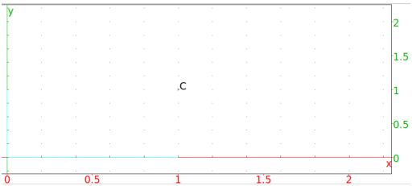

13.6.12 The center of a circle in the plane:
center
The
center
command finds the center of a circle.
center
takes one arguments:
C
, a circle.
center(
C
)
draws and returns the center of
C
.
Example
Input:
C:= center(circle(point(1+i),1))
Output:
